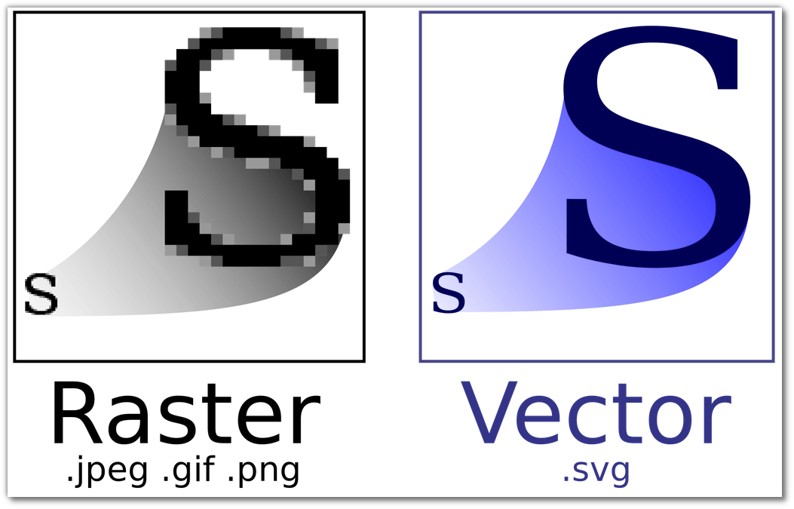

Modes
Coordinates
Basic Shapes
Accessibility
Animations
Why use SVG at all?
- Small file sizes that compress well
- Scales to any size without losing clarity (except very tiny)
- Looks great on retina displays
- Design control like interactivity and filters
Vector VS raster
Modes:
- normal
- multiply
- screen
- overlay
- darken
- lighten
- color-dodge
- color-burn
- hard-light
- soft-light
- difference
- exclusion
- hue
- saturation
- color
- luminosity
See the Pen Blend-mode by Inna (@snegurova) on CodePen.
SVG Coordinate System
The viewport
Basic Shapes
- Rectangle
- Circle
- Ellipse
- Line
- Polyline
- Polygon
- Path
Rectangle
Circle and Ellipse
Line and Polyline
Path and Polygon
Accessibility
SVG as img src
Inline SVG
Embed SVG via object or iframe
Animations
Let's draw elements and create a wave animation
Adding style via CSS
Here is a static result
Let's animate it by using @keyframes rule
Enjoying the result